Contents
Using showM
Repo location
This function belongs to the package "plotting tools".
https://gitlab.com/ascario/plotting-tools
Intro
This code visualize connectivioty matrices. The most basic functionality is to only display a 2d matrices. If you provide extra (optional) arguments, you can group connectivity values per functional system and mess with coloring schema and visualization ranges.
For the expert/impatient
Example 1
Using the most basic functionality
showM(M);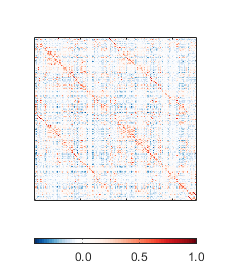
Example 2
Using a lot of options
showM(M,... 'parcel',parcel,... 'line_color',[0 0 0],... 'line_width',0.5,... 'clims',[-.3 .39],... 'fs_axis',10,... 'fig_wide',7,... 'one_side_labels',1,... 'fig_tall',8);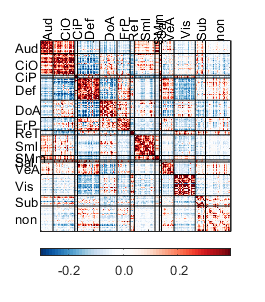
showM(M,... 'parcel',parcel,... 'line_color',[0 0 0],... 'line_width',0.5,... 'my_color','RG',... 'clims',[-.3 .39],... 'half','both');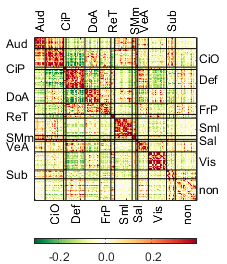
showM(M,... 'parcel',parcel,... 'line_color',[0 0 0],... 'line_width',0.5,... 'my_color','RG',... 'clims',[-.3 .39],... 'half','up');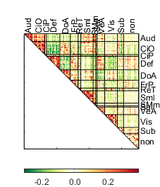
showM(M,... 'parcel',parcel,... 'line_color',[0 0 0],... 'line_width',0.5,... 'my_color','RG',... 'clims',[-.3 .39],... 'one_side_labels',1,... 'half','low');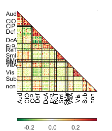
Inputs and examples
MANDATORY
M: A connectivity matrix size ROIxROI.
showM(M);
OPTIONAL (provided as paired arguments 'Name,Value')
- 'clims',Value, clims define the limots to be used vor visualization. 'Value' is a vector with the minimum and maximum value to be used for visualization. If not provided, the code will use as limits the minimun and maximum of M.
Example 1
Lets use [-.5 .5] as limits of visualization
minmax=[-.5 .5]; showM(M,... 'clims',[-.5 .5]); title(['Using [', num2str(minmax(1) ), ' ' num2str(minmax(2)), '] as limits']) % % Example 2 % % Let's remove extreme values from the connectivity matrices delta=.1;% how much (percentile) of the data to exclude values=M(tril(M)==0); %excluding values of the diagonal ptiles=[delta 100-delta]; %percentiles to incluide minmax=prctile(values,ptiles); showM(M,... 'clims',minmax); title(['Using [', num2str(minmax(1) ), ' ' num2str(minmax(2)), '] as limits'])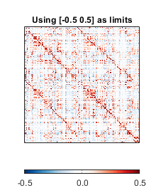 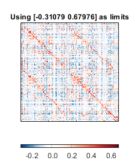
- 'parcel',Value, Here you can define the assignment of each ROI to a functional system. Value must be an structure whos size equals the number of functional systems and it must contain as fields the name and indices assigned to each functional system. YOu can inspect the included structure parcel that defines the Gordon parcelation schema
Example
showM(M,'parcel',parcel); %
- 'one_side_labels',Value. Value is 1 or 0 and indicates if you like the labels with the names of the functional system in one side or both sides of the matrix. Default is 0.
Example
showM(M,... 'parcel',parcel,... 'one_side_labels',1);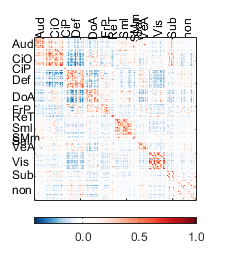
'line_width',Value. Line width for dividers. Default is 1.
Example
showM(M,... 'parcel',parcel,... 'line_width',1.5);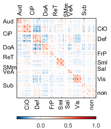
*line_color',Value'. Color to be used for the divider lines. If provided, must be a 3 elements vector with the RGB values of the color to be used. Default is white ([1 1 1])
Example
showM(M,... 'parcel',parcel,... 'line_color',[0 0 0],... 'line_width',0.5);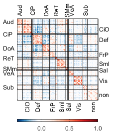
- *'show_dividers,Value'*Value is 1 or 0 and indicates whether you want lines to be displayed to separate functional systems. Default is 1
showM(M,... 'parcel',parcel,... 'show_dividers',0);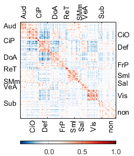
- 'my_color',Value. Predefined coloring schemas. Only availabe options are red-blue (RB, default), red-yellow-blue ('RYB'), and red-green ('RG'). If unhappy, you can always force jet, parula or any other matlab schema
Example
my_color=cell(3,1);
my_color{1}='RB';
my_color{2}='RYB';
my_color{3}='RG';
for i=1:3
showM(M,...
'parcel',parcel,...
'line_color',[0 0 0],...
'line_width',0.5,...
'my_color',my_color{i},...
'clims',[-.3 .39]);
end
showM(M,...
'parcel',parcel,...
'line_color',[0 0 0],...
'line_width',0.5,...
'my_color',my_color{i},...
'clims',[-.3 .39]);
colormap jet
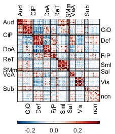 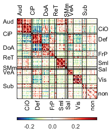 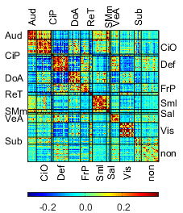 Showing data from only a few networks
If you want to show data from only a few networks, you need to make a new parcel object that only includes the networks you care. For example, if you just care about motor, subcortical and default, those systems in the provided sturcture parcel has the following indices: 8, 9 13, and 4.
The companion function and the following lines of code might help to get this thing done
n_systems=size(parcel,2); % count the number of functional systems in the object parcel ix_networks_to_keep=[8 9 13 4];% indices to keep ix_networks_to_remove=get_ix_networks_to_remove(ix_networks_to_keep,n_systems); % get the indices of the systems to remove % calculate the new truncated parcel abject and the corresponding truncated % matrix with the indices properly sorted [newM, newParcel]=truncate_parcel_resort_matrix(M,parcel,ix_networks_to_remove); % % Calculate color limits excluding a delta of one on each tale delta=1; clims=get_ptiles_M(newM,delta); % % Define options for plotting fig_wide=8; fig_tall=9; line_color=[1 1 1]*0; one_side_labels=1; half='low'; line_width=.01; my_color='RB'; % % Display the new matrix showM(newM,'parcel',newParcel,... 'clims',clims,... 'fig_tall',fig_tall,... 'fig_wide',fig_wide,... 'line_color',line_color,... 'one_side_labels',one_side_labels,... 'half',half,... 'my_color',my_color,... 'line_width',line_width);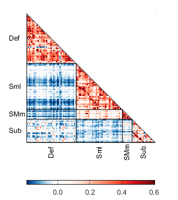
Showing data from only specific systems
If you want to only show data from particular systems, you need to provide the list of the pairs you care. Building on the previous example, if you only like to show data from the Def-Def, Def-Sml and Sub-SMm on the truncated parcel, you need to identify the indices:
count systems in the new parcel
n_systems=size(newParcel,2); % % Display the indices [num2str([1:n_systems]') repmat(') ',n_systems,1) cat(1,char(newParcel.name)) repmat(', n = ',n_systems,1) num2str(cat(1,newParcel.n))] % % Report the indices ix_parcel_pairs_on=[1 1; 2 3; 3 4]; showM(newM,'parcel',newParcel,... 'clims',clims,... 'fig_tall',fig_tall,... 'fig_wide',fig_wide,... 'line_color',line_color,... 'one_side_labels',one_side_labels,... 'half',half,... 'my_color',my_color,... 'line_width',line_width,... 'IX_parcel_pairs_ON',ix_parcel_pairs_on);
ans =
4×22 char array
'1) Def , n = 41'
'2) Sml , n = 38'
'3) SMm , n = 8'
'4) Subcortical, n = 19'
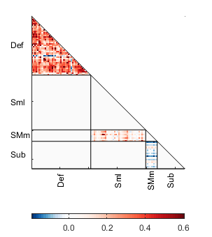 Get color limits based on the systems you care
This function calculate color limits based
clims=get_ptiles_M_from_pairs(newM,delta,newParcel,ix_parcel_pairs_on); showM(newM,'parcel',newParcel,... 'clims',clims,... 'fig_tall',fig_tall,... 'fig_wide',fig_wide,... 'line_color',line_color,... 'one_side_labels',one_side_labels,... 'half',half,... 'my_color',my_color,... 'line_width',line_width,... 'IX_parcel_pairs_ON',ix_parcel_pairs_on);
Credits and date
Code developed by Oscar Miranda-Dominguez.
First line of code: July 5, 2018
Documentation started on May 24, 2019